| min | ptile_25 | mean | median | ptile_75 | max |
|---|---|---|---|---|---|
| 87 | 10,929.5 | 105,535 | 25,705 | 68,928 | 9,943,046 |

| min | ptile_25 | mean | median | ptile_75 | max |
|---|---|---|---|---|---|
| -33.3 | -4.8 | 1.122343 | -0.7 | 5.175 | 139.7 |

| fips | state | county | pop_2020 | pct_pop_change |
|---|---|---|---|---|
| 06037 | CA | Los Angeles | 9,943,046 | 1.3 |
| 17031 | IL | Cook | 5,108,284 | -1.7 |
| 48201 | TX | Harris | 4,738,253 | 15.8 |
| 04013 | AZ | Maricopa | 4,579,081 | 20.0 |
| 06073 | CA | San Diego | 3,332,427 | 7.7 |
| 06059 | CA | Orange | 3,166,857 | 5.2 |
| 12086 | FL | Miami-Dade | 2,707,303 | 8.4 |
| 48113 | TX | Dallas | 2,635,888 | 11.3 |
| 36047 | NY | Kings | 2,538,934 | 1.4 |
| 06065 | CA | Riverside | 2,489,188 | 13.7 |
| fips | state | county | pop_2020 | pct_pop_change |
|---|---|---|---|---|
| 31005 | NE | Arthur | 466 | 1.3 |
| 31009 | NE | Blaine | 457 | -4.4 |
| 48261 | TX | Kenedy | 379 | -8.9 |
| 48269 | TX | King | 283 | -1.0 |
| 48301 | TX | Loving | 181 | 120.7 |
| 15005 | HI | Kalawao | 87 | -3.3 |
| 02261 | AK | Valdez-Cordova Census Area | NA | NA |
| 02270 | AK | Wade Hampton Census Area | NA | NA |
| 46113 | SD | Shannon | NA | NA |
| 51515 | VA | Bedford city | NA | NA |
| fips | state | county | pop_2020 | pct_pop_change |
|---|---|---|---|---|
| 38053 | ND | McKenzie | 15,242 | 139.7 |
| 48301 | TX | Loving | 181 | 120.7 |
| 38105 | ND | Williams | 38,700 | 72.8 |
| 48209 | TX | Hays | 241,365 | 53.6 |
| 48091 | TX | Comal | 164,812 | 51.9 |
| 49051 | UT | Wasatch | 35,300 | 50.0 |
| 12119 | FL | Sumter | 139,018 | 48.8 |
| 12109 | FL | St. Johns | 278,715 | 46.7 |
| 19049 | IA | Dallas | 96,963 | 46.6 |
| 48491 | TX | Williamson | 617,855 | 46.2 |
| fips | state | county | pop_2020 | pct_pop_change |
|---|---|---|---|---|
| 17003 | IL | Alexander | 5,497 | -33.3 |
| 48095 | TX | Concho | 2,827 | -30.8 |
| 48443 | TX | Terrell | 702 | -28.7 |
| 54047 | WV | McDowell | 16,916 | -23.5 |
| 20129 | KS | Morton | 2,538 | -21.5 |
| 02060 | AK | Bristol Bay Borough | 788 | -21.0 |
| 40011 | OK | Blaine | 9,447 | -20.9 |
| 05107 | AR | Phillips | 17,299 | -20.5 |
| 22107 | LA | Tensas Parish | 4,178 | -20.4 |
| 48413 | TX | Schleicher | 2,761 | -20.2 |
| fips | state | county | pop_2020 | pct_pop_change |
|---|---|---|---|---|
| 48209 | TX | Hays | 241,365 | 53.6 |
| 48091 | TX | Comal | 164,812 | 51.9 |
| 12119 | FL | Sumter | 139,018 | 48.8 |
| 12109 | FL | St. Johns | 278,715 | 46.7 |
| 48491 | TX | Williamson | 617,855 | 46.2 |
| 12097 | FL | Osceola | 385,315 | 43.4 |
| 48157 | TX | Fort Bend | 839,706 | 43.4 |
| 13117 | GA | Forsyth | 250,847 | 42.9 |
| 48397 | TX | Rockwall | 109,888 | 40.3 |
| 37019 | NC | Brunswick | 149,039 | 38.7 |
| fips | state | county | pop_2020 | pct_pop_change |
|---|---|---|---|---|
| 42021 | PA | Cambria | 128,672 | -10.4 |
| 54039 | WV | Kanawha | 176,253 | -8.7 |
| 28049 | MS | Hinds | 227,966 | -7.1 |
| 17115 | IL | Macon | 103,015 | -7.0 |
| 36045 | NY | Jefferson | 108,095 | -7.0 |
| 22017 | LA | Caddo Parish | 237,479 | -6.9 |
| 42085 | PA | Mercer | 108,545 | -6.9 |
| 29510 | MO | St. Louis city | 297,645 | -6.8 |
| 36013 | NY | Chautauqua | 126,032 | -6.6 |
| 39155 | OH | Trumbull | 196,800 | -6.4 |